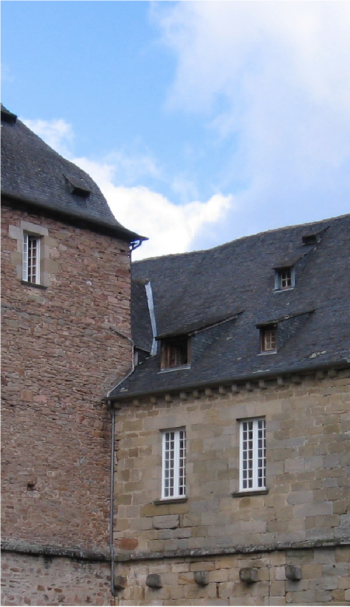

Inspiration +
Iconography
At the age of twelve, Chanel was handed over to the care of nuns, and for the next six years spent a stark, disciplined existence in a convent orphanage, Aubazine, founded by Cistercians in the 12th century. From her earliest days there, the number five had potent associations for her. For Chanel, the number five was especially esteemed as signifying the pure embodiment of a thing, its spirit, its mystic meaning. The paths that led Chanel to the cathedral for daily prayer were laid out in circular patterns repeating the number five.
Her affinity for the number five co-mingled with the abbey gardens, and by extension the lush surrounding hillsides abounding with cistus, a five-petal rose.
In 1920, when presented with small glass vials containing sample scent compositions numbered 1 to 5 and 20 to 24 for her assessment, she chose the fifth vial. Chanel told her master perfumer, Ernest Beaux, whom she had commissioned to develop a fragrance with modern innovations: “I present my dress collections on the fifth of May, the fifth month of the year and so we will let this sample number five keep the name it has already, it will bring good luck.”
